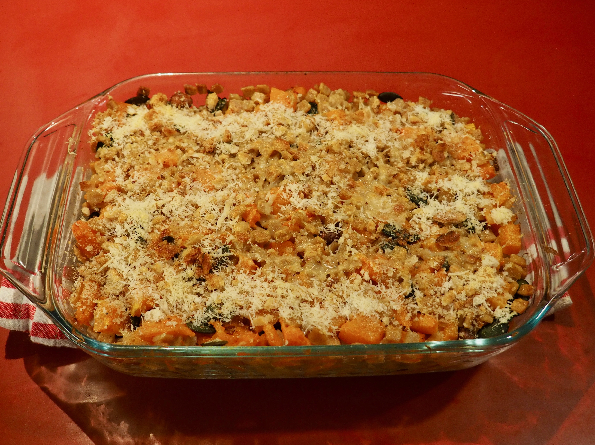
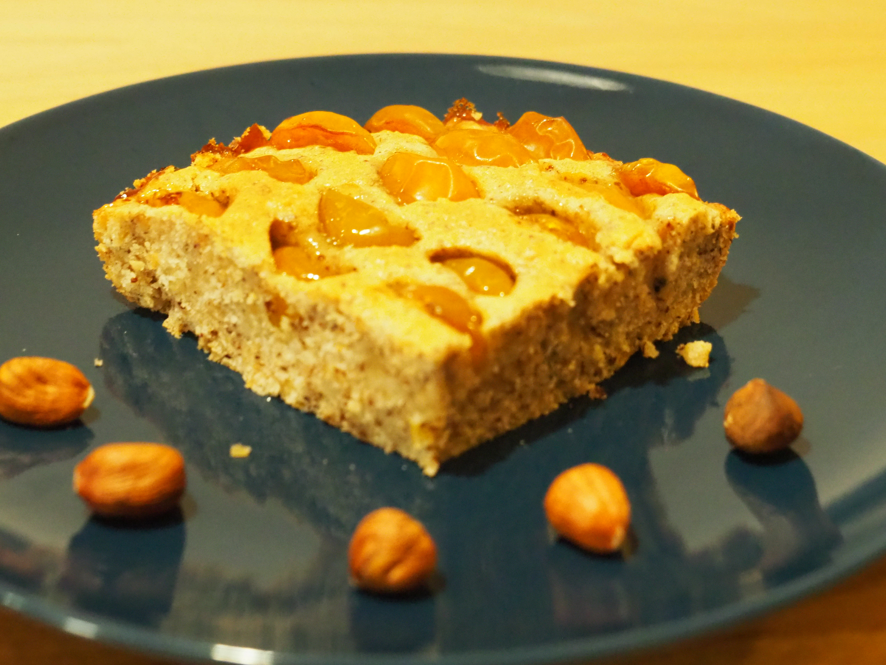

Automne
Salé
Gratin de courge aux crozets
Pour 6 personnes | Temps préparation : 30 min | Temps cuisson : 25 min
Chaleureux et consistent
Ingrédients
- Environ 400g de courge (butternut par exemple)
- 300g de crozets au sarrasin (ou classiques)
- Fromage râpé (idéalement parmesasn ou Grana Padano)
- Un peu de panure
- Beurre
- Crème
Consignes
- Détailler la courge en petits dés et les faire cuire au four à 180°C une quinzaine de minutes (ils doivent être quasiment cuits mais légèrement fermes encore). On peut mettre la poignée de noisettes avec en cours de cuisson pour les torréfier un peu.
- Faire cuire les crozets dans l’eau bouillante puis les assaisonner d’un peu de sel, de poivre et d’une noix de beurre
- Mélanger dés de courge, Crozet et noisettes dans un plat à gratin. Arroser d’un peu de crème liquide, de panure et de fromage râpé
- Enfourner le temps que le dessus gratine

Sucré
Creusois aux fruits
6/8 personnes | Temps préparation : 20 min | Temps cuisson : 45 min
Un bon goûter pour un jour pluvieux
Ingrédients
- 100 g de noisettes
- 120 g de farine
- 4 blancs d’oeufs
- 80 g de sucre
- 90 g de beurre fondu
- Fruits selon envies : mirabelles ou figues fonctionnent très bien
Consignes
- Griller légèrement les noisettes à la poêle ou au four puis les réduire en poudre pas trop grossière
- Monter les blancs en neige
- Mélanger farine, sucre et beurre fondu. Ajouter progressivement les blancs montés en neige avec une spatule en bois sans trop les casser.
- Une fois la pâte lissée, ajouter la poudre de noisette et homogénéiser
- Laver et couper les fruits choisis
- Verser et égaliser la pâte dans un moule à gratin
- Disposer les fruits en les enfonçant dans la pâte
- Cuire 45 min à 180°C ; ajuster la durée en fonction de l’humidité apportée par les fruits
